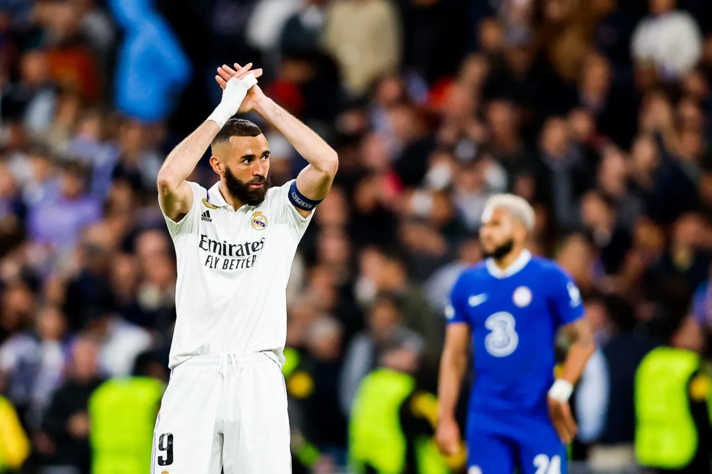

A Stamford Bridge, l'équipe mené par Ancelotti a réussi à déjouer les tours des blues. Porté par un Karim Benzema étincellant, les madrilènes ont su trouvé la faille dans l'entre londonienne. Un doublé de Rodrigo a mis un véritable coup de clim au peuple anglais. Avec un Karim Benzema discret en première mi-temps, à l'image de son équipe, le jeune lyonnais à reussi à remobiliser ses troupes pour permettre au jeune Brésilien, origiaine de Sao Paulo, de délivrer les Merengues.
Nous pouvons donc nous demander si Karim Benzema mérite un second ballon d'or, qui sera on le rappelle, POUR LE PEUPLE.
